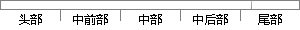

同时，括号内的数值表明，由C5.
片段位置图

相似结果|
1
原句片段：同时，括号内的数值表明，由C5.
相似片段 1：excel 括号前的数值怎么同时减1,同时保持括号内的数值不变输入下面公式=(--LEFT(A1,FIND("(",A1,1)-1)-1)&RIGHT(A1,LEN(A1)-FIND("(...
相似片段 2：求统计学Eviews大神,OLS回归分析后,FOI下面括号内的数值表示什么?...追问 那这些t检验值表明参数估计值是显著的对吗? 本回答由网友推荐 评论 1 0...
相似片段 3：注:括号内的数值表示的是带制动器电机的尺寸。 ●...另外,在步骤2中可以同时按下MODE和ENTER键进入参数号...01H03H02H(地址高位)00H(地址低位)00H02HC5H(校验...
|
※ 片段修改建议 ※
近似词参考：- 表明：表白 讲明 解释 评释 注解
系统自动生成语句：同时，括号内的数值表白，由C5.
注：本片段修改建议为系统自动生成，仅供参考。